2019-06-16
首先，这个写完以后，截图没有保存为文件，所以有的图片都是后来在原图上面截取的，所以有的不是很清楚。
题目下载 密码: dt92
1.相机.jpg
由文件名字可以知道，这道题是考察了识别照片的属性，说白了就是看看这个是用什么相机拍的
果真，在打开文件属性找到照相机型号处发现flag。
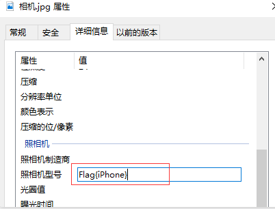
flag: Flag{iPhone}
2.logo.png
打开图片发现是png图片，发现这个根据题目也没什么信息可以得到，果断丢进16进制编辑器看一下
然后发现在png文件尾部发现flag
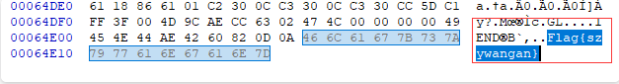
flag: Flag{szywangan}
3.神器.png
一说神器，肯定是就是再说Stegsolve这个工具，所以用这个工具打开看看
翻到blue 0通道的位置发现了一张二维码
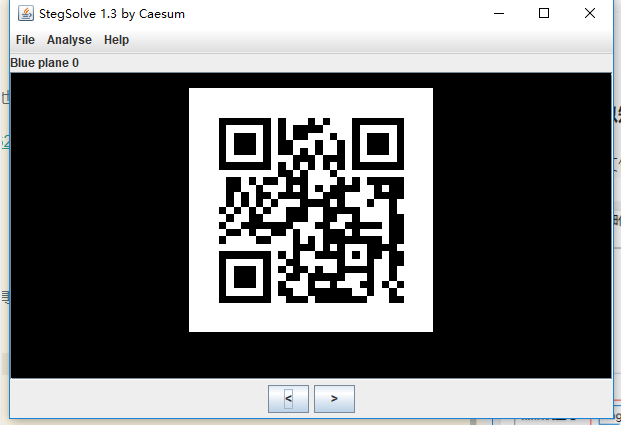
用QR扫描一下发现flag
flag: Flag{douniwan}
4.男神
打开发现是两张图片
都是png的后缀
继续丢进那个stegsolve里面进行对比一下，发现了两张二维码
一张残缺的，一张清晰的。
。。。。然后继续丢进工具中来查看
发现第一张有个二维码但是被反色了
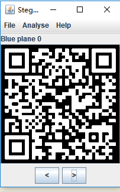
调高QR的纠错等级，进行扫描，成功出结果
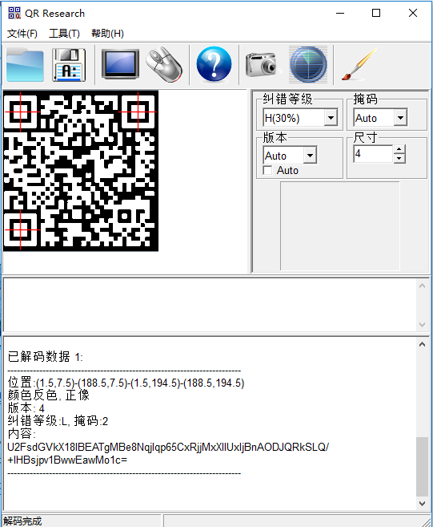
然后看第二张的结果
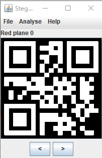
在Red 0通道、Green 0通道发现两张二维码
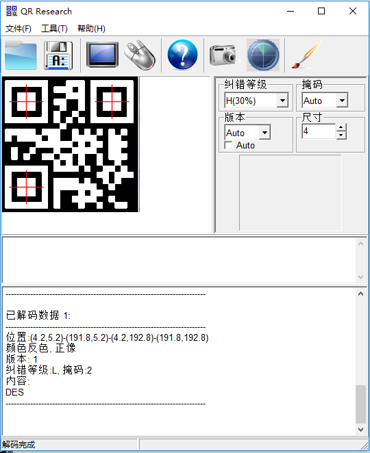
结果：DES
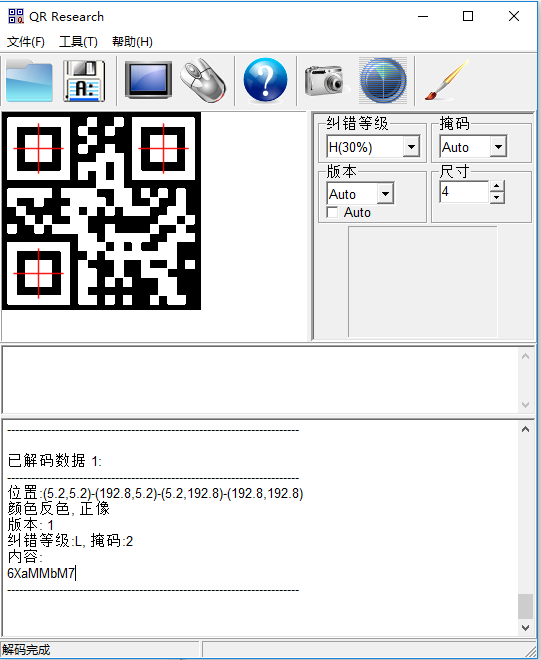
结果：6XaMMbM7
DES解密
密钥和密文都给了，加密方式也给了。
直接出flag
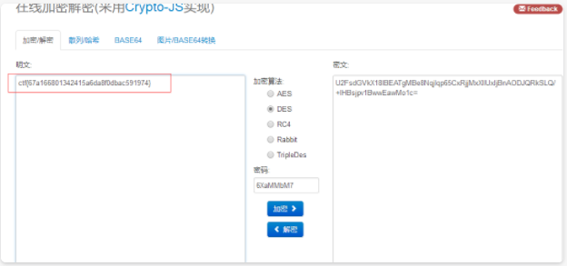
flag: ctf{67a166801342415a6da8f0dbac591974}
5.cnhongke.gif
看标题，不知道这道题要考察什么，只能做做看看了
发现文件是坏的，进行修复
16进制打开发现头文件格式少了，进行填充
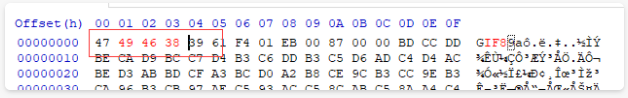
GIF头文件：47 49 46 38 39 61
然后再看
发现flag，进行gif分析，获取flag
在线分解GIF
然后拿到flag
flag: Flag{fxiZHXoPJ}
6.眼见非实.zip
这个题就很常见，ISCC2017中出现过一次，蓝盾BDCTF2017年那届也出现过一次，很有意思的一道题
打开是个压缩包，解压后是个文档发现开头出现PK的字样，很显然zip的文件头，果断改后缀
再解压
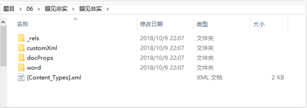
发现了很多文件，然后一个一个找flag就找到了
最后在document.xml文件中发现了flag
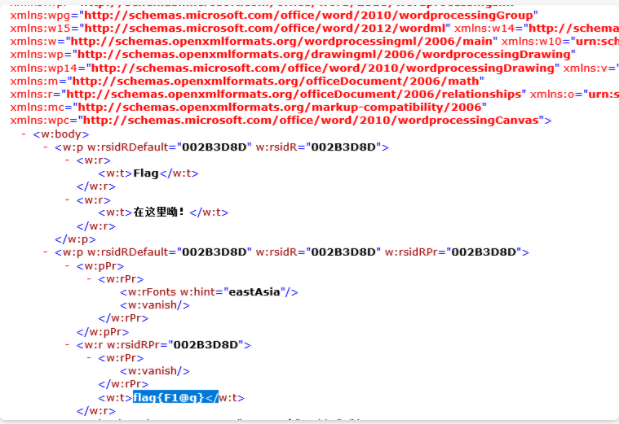
flag：flag{F1@g}
7.apple.png
这道题也是，看题目不知道该干什么
是个png的文件
16进制看了下，发现文件尾藏了什么东西
果断binwalk命令 or foremost命令分离一波（有经验的可以手动扣）
发现有个RAR
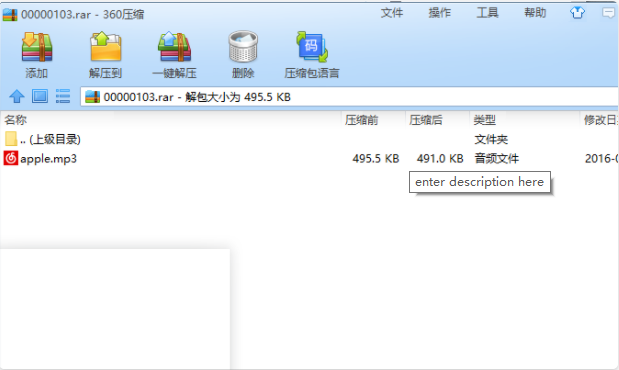
是个音乐，发现可以播放，是小苹果（你是我的小呀小苹果~），是个MP3的音乐格式，发现有杂音。
想起来了个工具mp3隐写分离工具（MP3Stego），但是没有给密码什么的，就拿apple当作密码试一下吧
发现解不开，然后回头看看哪里于没有忽略的地方。
打开原图发现二维码
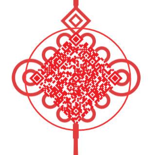
QR扫描一下发现是Unicode编码
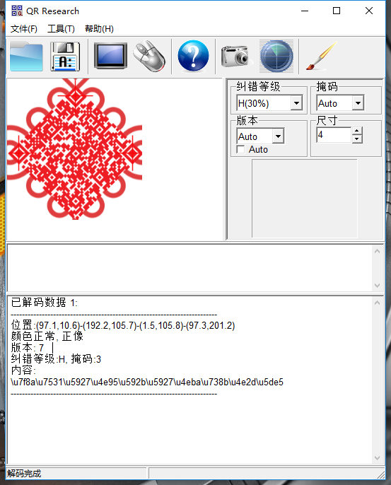
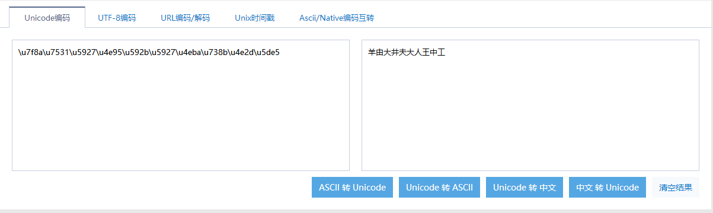
发现是当铺密码，然后继续当铺密码解密
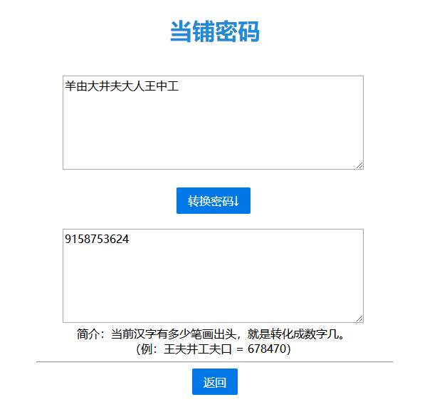
OK继续回到上面的步骤，进行MP3Stego解密
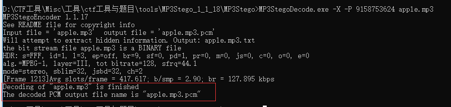
成功，打开即可看到一个base64编码过的明文
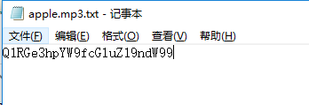
脚本解密即可
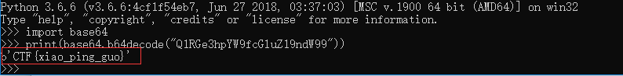
flag: CTF{xiao_ping_guo}
8.gakki.png
看标题也看不出什么，png文件的后缀，打开属性看到
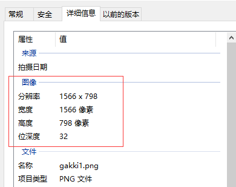
然后进16进制将他们两个修改成一样（具体怎么修改，去百度png文件格式详解）
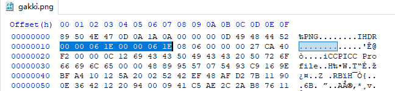
保存一下就可看到flag
flag: flag{H1gh_4nD_Wid7h}
9.telnet.pcap
打开看到，是个通讯的数据包，用wireshark打开看一下
然后追踪一下TCP流看了一下，发现flag
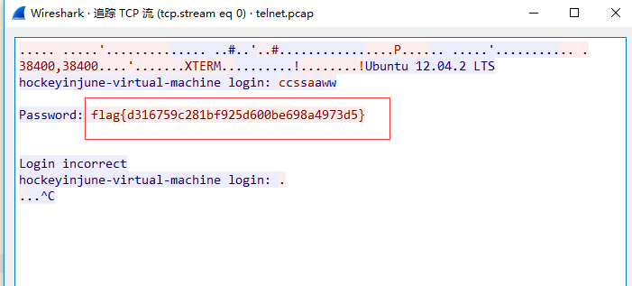
flag: flag{d316759c281bf925d600be698a4973d5}
10.web
打开后，只是看到了个无后缀的文件。用16进制打开看一下也没发现什么。
卡住了。。。。
既然是Web，继续用wireshark打开看看，结果真的出现了个数据包
在导出http对象的位置，发现了些压缩包和数据
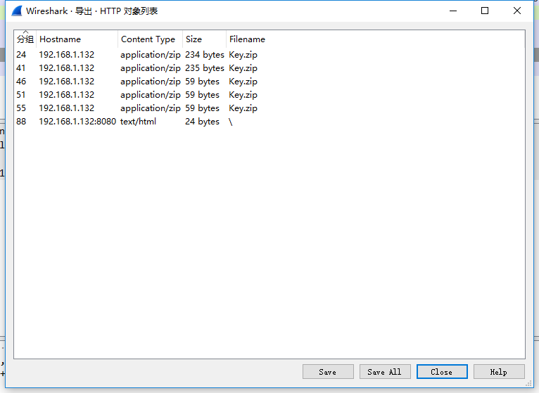
然后导出所有的压缩包和文件后发现只有一个压缩包是没有损坏的，但是加密了
最后发现在刚刚一并导出的文件里面出现了password
password=shadowpassword
解密直接出flag
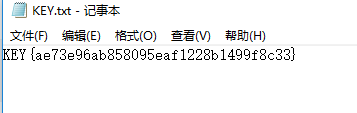
flag: KEY{ae73e96ab858095eaf1228b1499f8c33}
11.1478282740_581ccdf44bf5f.zip
打开发现是个加密的压缩包，需要密码。但是后面有句话提示：这小伙很没安全意思，总喜欢把自己的银行卡密码设置为文档密码
银行卡6位数字，生成一个字典，进行爆破一下。
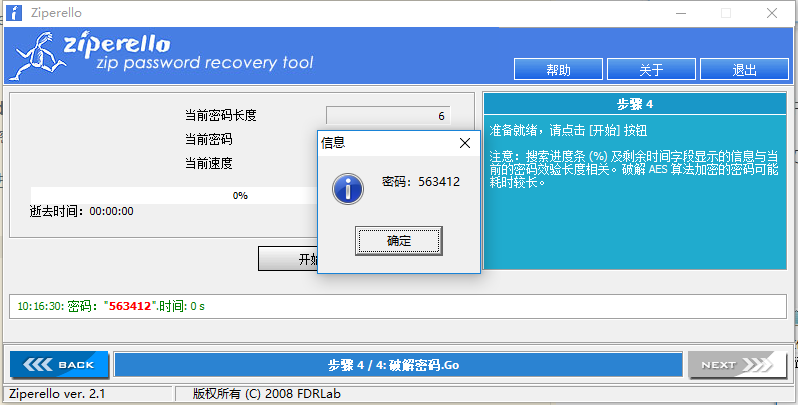
然后解压出来发现是一首诗
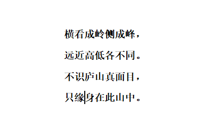
只缘身在此山中，就是在这个文件中吧，然后拖到16进制编辑器里面看一下。
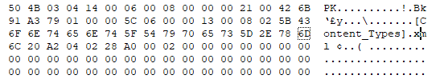
PK的文件头，zip的文件，继续改后缀，解压看一下，发现又是和眼见非实那道题一样。
打开doucument.xml查找flag，果然在这里
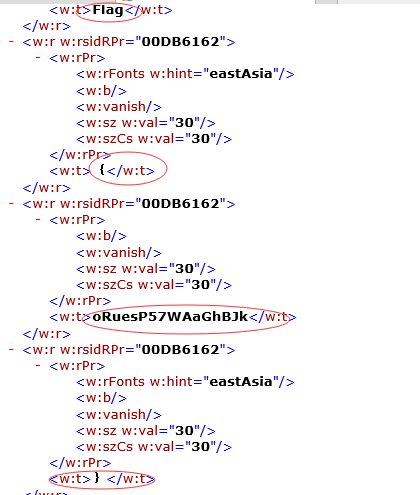
flag: Flag{oRuesP57WAaGhBJk}
12.伪加密
360真香(360压缩包)
解压直接出flag
正解：用16进制编辑器打开，即可看到flag
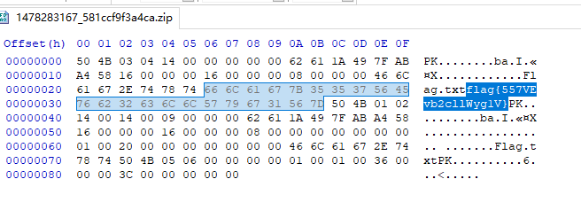
继续，从00 00可以看出，他是未加密的，但是压缩包打开后需要密码，这说明他进行了一个伪加密
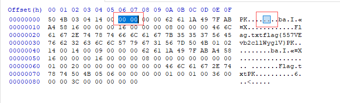
只需把09这个位置改成00，就修复了
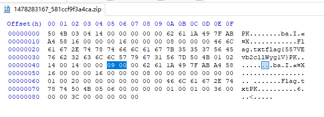
然后保存一下看看
直接出flag
flag: flag{557VEvb2cllWyg1V}